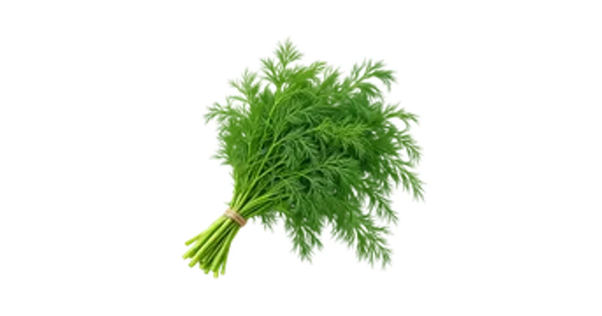

सुआ पत्ती की जानकारी | Dill Leaves
सुआ पत्ती की पहचान, उपयोग और इससे जुड़ी जानकारी पढ़ें।

सुआ पत्ती की पहचान और उपयोग
सुआ पत्ती, जिसे Dill Leaves भी कहते हैं, सुआ पौधे की हरी पत्तियां हैं। इनका उपयोग भोजन में सुगंध और स्वाद के लिए किया जाता है।